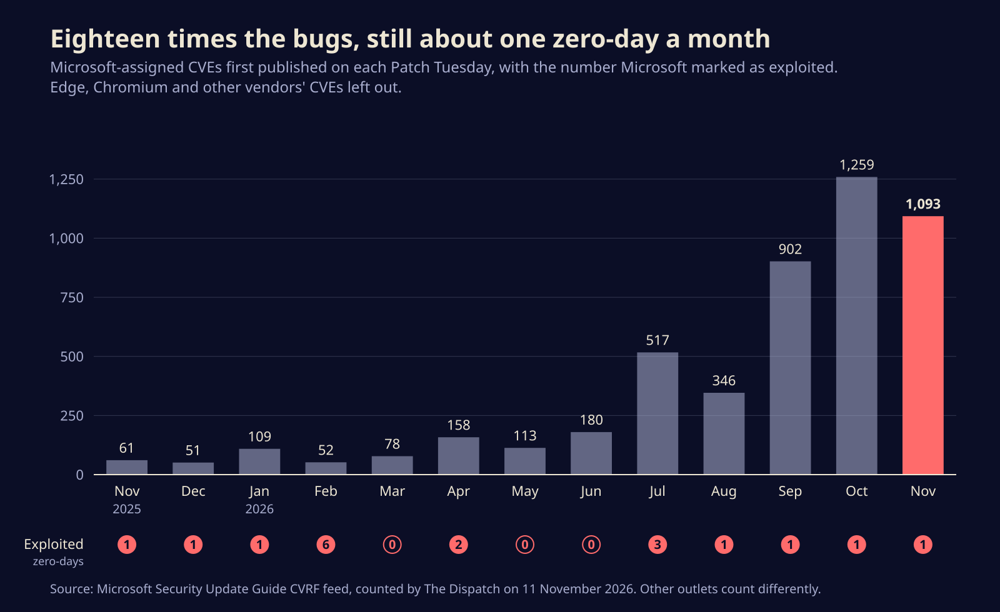

Microsoft fixed 1,093 bugs, and the one under attack leaks your Windows password hash
November's Patch Tuesday is eighteen times the size it was a year ago, yet only one flaw is being exploited. Here is what that Outlook bug does, why outlets can't agree on the total, and what to patch first.
Microsoft shipped fixes for 1,093 of its own vulnerabilities on Tuesday, and exactly one of them is already being used by attackers: an Outlook flaw that hands your network password hash to whoever sent you the right file. If you run Windows with classic Outlook or any Microsoft 365 desktop apps, that is the update to push today, along with the Chrome release Google put out a day earlier for its own exploited bug.
The other 1,092 still matter. But a month this big rewards a patch order more than panic, and the order is short.
A file that phones home with your credentials
The exploited bug is CVE-2026-124194, which Microsoft files as an Outlook spoofing vulnerability. That label undersells it. According to Microsoft's advisory, an attacker sends a crafted message file and talks the target into opening it. Outlook then reaches out to a server the attacker controls, skipping the warning it normally shows before loading outside content, and in doing so hands over the user's NTLMv2 hash.
NTLM is the old Windows challenge-and-response login scheme that still sits under a lot of corporate networks. A captured NTLMv2 hash can be cracked offline if the password is weak, or relayed straight away to another server that accepts NTLM, letting the attacker sign in as the victim without ever learning the password. Microsoft rates the bug 6.5 out of 10 on the CVSS scale because it needs a user to open something. Attackers have shown for years that this is not much of a hurdle.
Two details from the advisory help. The Preview Pane is not an attack vector, so simply clicking past the message in your inbox does not trigger it; opening the file does. And the fixes cover Microsoft 365 Apps for Enterprise plus Office LTSC 2021 and LTSC 2024, in both 32-bit and 64-bit builds.
CISA added the bug to its Known Exploited Vulnerabilities catalog the same day and gave US federal agencies until 24 November to fix it. Microsoft has not said who is using it or against whom. Its acknowledgements credit two finders, one of them a researcher who worked with Anthropic and used its Claude model.
Why one outlet says 1,093 and another says 1,235
If you read three write-ups this morning you saw three totals. Tenable says 1,093, BleepingComputer says a record 1,235, and Rapid7 says 1,092. They are mostly counting different things, and the difference is not trivia, because it tells you where the work is.
We pulled Microsoft's machine-readable release file for November. It lists 1,362 CVEs in all, but many belong to other projects that Microsoft ships inside its products: 165 Chromium bugs that flow into Edge, 41 Linux kernel bugs patched in Azure Linux, and about 60 from other open-source projects. Count only the CVEs Microsoft itself assigned and first published on Tuesday and you get 1,093, of which 63 are rated Critical and 1,029 Important. Add the 142 Edge entries BleepingComputer included and you arrive at its 1,235.

The bigger story sits in the trend. By the same method, a year ago Microsoft's November release carried 61 of its own CVEs. This summer the count broke 500, September brought 902, October 1,259. The number Microsoft flags as exploited in the wild has stayed stubbornly flat at roughly one a month. Rapid7's write-up says volumes like this "would have been unimaginable" not long ago, and asks a fair question: whether pushing out this much changed code is making anyone safer, given that every fix is new code that can carry new bugs.
Nobody at Microsoft has put a single cause on the curve, so we won't either. The acknowledgements list is suggestive, though. One of the month's most prolific finders is credited on 18 CVEs as using GLM, a large language model from z.ai, and a handful of other entries name Claude or Anthropic.
What to patch first
The volume makes triage the real job. A sensible order for most shops:
- Outlook and Office. Install the November Office security updates for Microsoft 365 Apps and Office LTSC 2021 and 2024. This is the only Microsoft bug with confirmed attacks.
- Chrome and every Chromium browser. Google's 9 November update to version 157.0.8103.50 (Linux) and 157.0.8103.50/.51 (Windows and Mac) fixes CVE-2026-125350, a use-after-free in Chrome's XML code. Google says an exploit exists in the wild. Edge, Brave and Opera need their own matching updates.
- Exchange servers. CVE-2026-116928 is a 9.8-rated flaw in Windows Search that Exchange triggers by itself when it indexes an incoming attachment, so nobody has to open anything. The fix ships in the Windows update, not an Exchange one.
- Domain controllers and anything speaking TLS. CVE-2026-118146 in Active Directory and CVE-2026-119952 in Schannel, the Windows TLS library, are both Critical, and Microsoft rates each as more likely than usual to be exploited.
- Everything else on your normal cycle, through the Windows 11 cumulative updates KB5132061 and KB5131087.
Then make the Outlook bug less useful even where patching lags. NTLM relay only works against services that accept unsigned NTLM logins, so turn on SMB signing and LDAP signing and channel binding, enable Extended Protection on Exchange, and block outbound SMB on port 445 at the firewall so a hash has a harder time leaving the building. Those steps also blunt the next NTLM leak, and given the past few years, there will be one.
The real bottleneck is now on the receiving end
For most of the past decade, the scarce resource in security was finding bugs. That is visibly no longer true. Machines and the people steering them now turn up flaws faster than vendors used to ship fixes, and the strain has moved to the admins who have to test and deploy 1,000 patches a month without breaking payroll. The month's lesson is that exploitation, not volume, is still the signal worth chasing, and that one boring Outlook bug deserves more of your Tuesday than the other thousand.
Sources
- Microsoft Security Response Center, CVE-2026-124194 and the November 2026 security update data
- CISA, Known Exploited Vulnerabilities Catalog
- Google, Chrome Releases: Stable Channel Update for Desktop, 9 November 2026
- Tenable, Microsoft's November 2026 Patch Tuesday addresses 1,093 CVEs
- Rapid7, Patch Tuesday, November 2026
- BleepingComputer, Microsoft November 2026 Patch Tuesday fixes 1,235 flaws, Outlook zero-day
Written with AI for Bade's Mod Shop. Facts are checked against the sources above on the day of publishing; if one is wrong, open an issue.